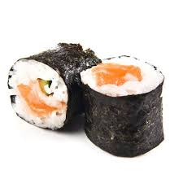
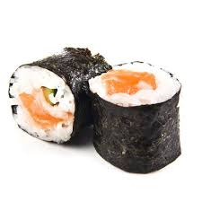

Información
Sushi Roll es un restaurante japonés que ofrece una amplia variedad de platillos típicos de la gastronomía japonesa. Todos nuestros platillos están elaborados con ingredientes frescos y de la más alta calidad, para brindarte una experiencia culinaria inigualable.
Productos
- Sushi
- Sashimi
- Tempura
- Yakitori
- Udon
Promociones
No te pierdas nuestras promociones especiales, como el 2x1 en rollos de sushi los lunes y miércoles, o el menú ejecutivo de lunes a viernes a un precio muy accesible.
Galería
 

Ubicación
Estamos ubicados en la Calle del Sabor #123, en el centro de la ciudad. ¡Ven a visitarnos!